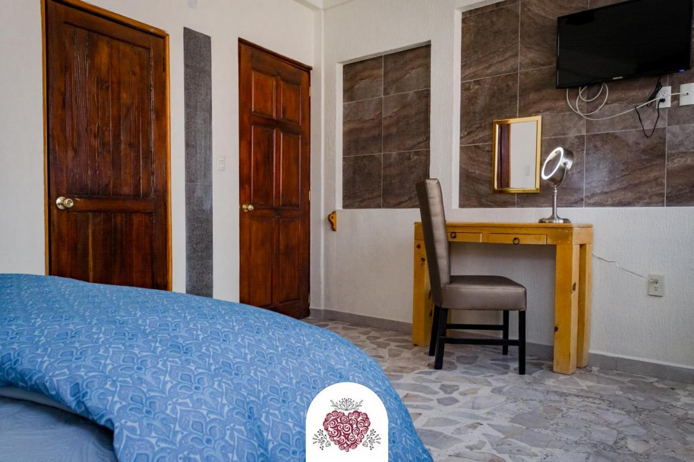
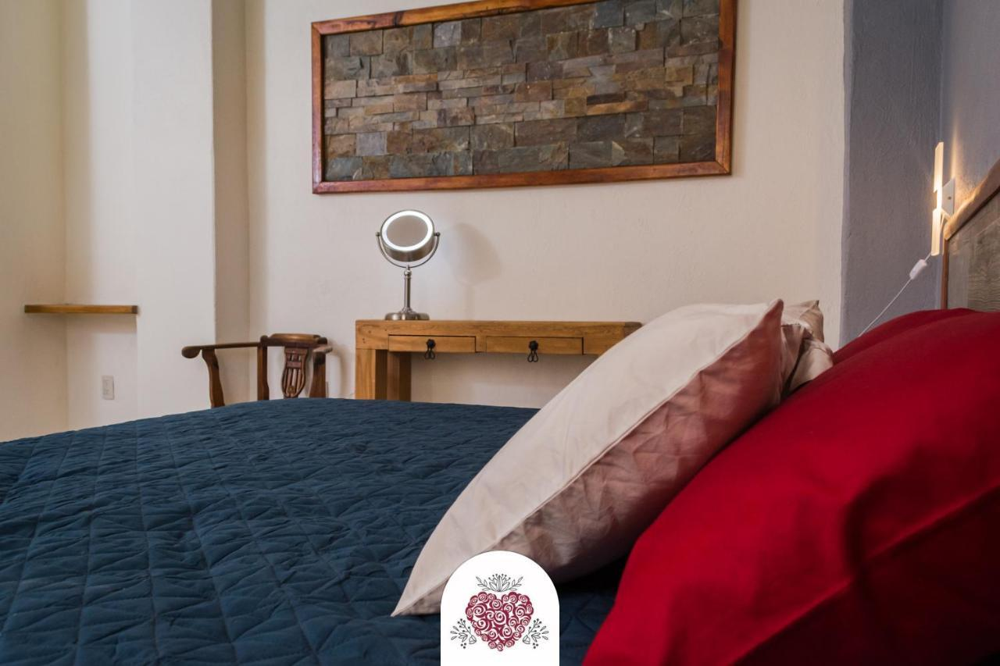

Boutique Hotel "Corazón de Plata"
Encanto colonial en el corazón de Cuautla con estilo y hospitalidad.
⬅️ Volver a HospedajeDetalles del Hospedaje
📍 Ubicación: Cuautla, Morelos
🌐 Sitio Web: www.corazondeplatahotel.com
☎️ Teléfono: +52 735 654 3210
🌟 Clasificación: 4 estrellas
Sobre el Hotel
"Corazón de Plata" ofrece una experiencia íntima con un diseño que combina lo colonial y lo moderno. Ubicado a pocos pasos del centro histórico de Cuautla, es ideal para quienes buscan confort y cultura.
Cuenta con habitaciones decoradas con artesanía local, servicio de desayuno incluido, terraza con jardín y un ambiente acogedor que te hará sentir en casa.
Galería


Diseño con alma y corazón en Cuautla.